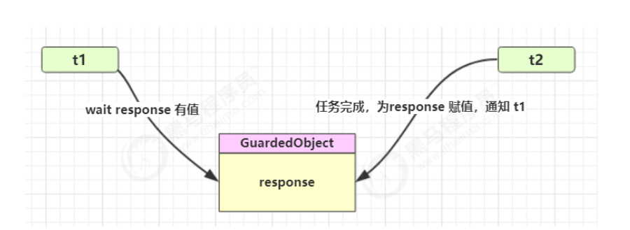
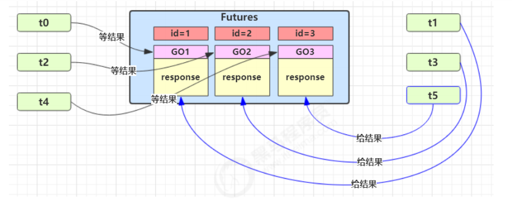

设计模式-保护性暂停
定义
保护性暂停（Guarded
Suspension），用在一个线程等待另一个线程的执行结果。

实现
1
2
3
4
5
6
7
8
9
10
11
12
13
14
15
16
17
18
19
20
21
22
23
24
| class GuardedObject {
private Object response;
private final Object lock = new Object();
public Object get() {
synchronized (lock) {
while (response == null) {
try {
lock.wait();
} catch (InterruptedException e) {
e.printStackTrace();
}
}
return response;
}
}
public void complete(Object response) {
synchronized (lock) {
this.response = response;
lock.notifyAll();
}
}
}
|
带超时的实现
1
2
3
4
5
6
7
8
9
10
11
12
13
14
15
16
17
18
19
20
21
22
23
24
25
26
27
28
29
30
31
32
33
34
35
36
37
38
39
| class GuardedObjectV2 {
private Object response;
private final Object lock = new Object();
public Object get(long millis) {
synchronized (lock) {
long begin = System.currentTimeMillis();
long timePassed = 0;
while (response == null) {
long waitTime = millis - timePassed;
log.debug("waitTime: {}", waitTime);
if (waitTime <= 0) {
log.debug("break...");
break;
}
try {
lock.wait(waitTime);
} catch (InterruptedException e) {
e.printStackTrace();
}
timePassed = System.currentTimeMillis() - begin;
log.debug("timePassed: {}, object is null {}",
timePassed, response == null);
}
return response;
}
}
public void complete(Object response) {
synchronized (lock) {
this.response = response;
log.debug("notify...");
lock.notifyAll();
}
}
}
|
多任务的保护性暂停
